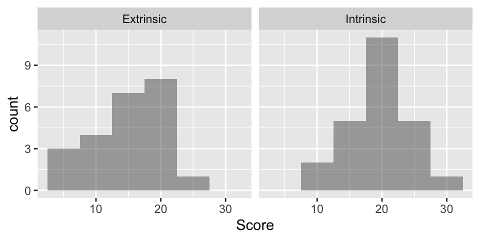
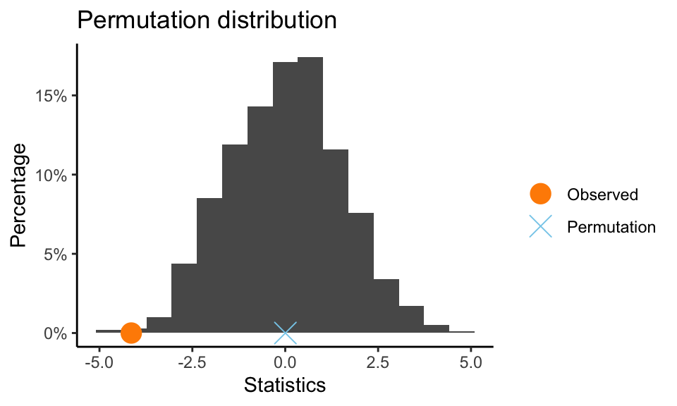
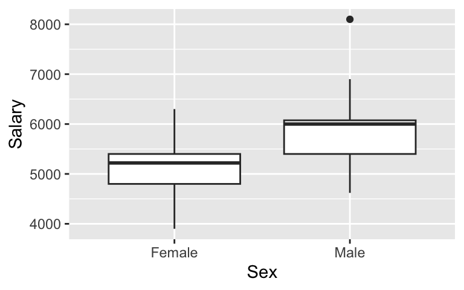
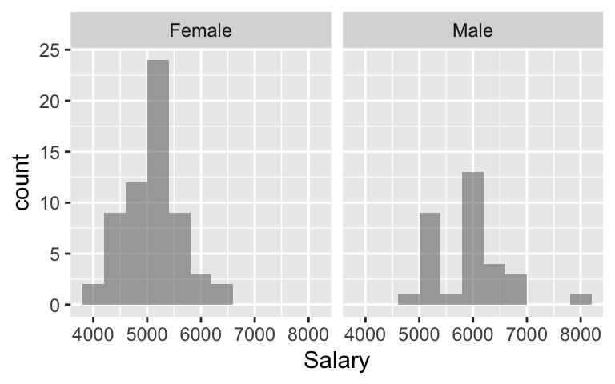
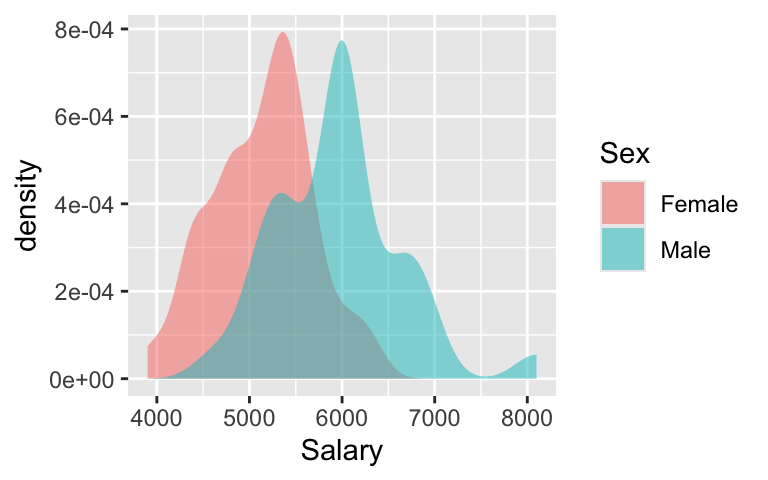
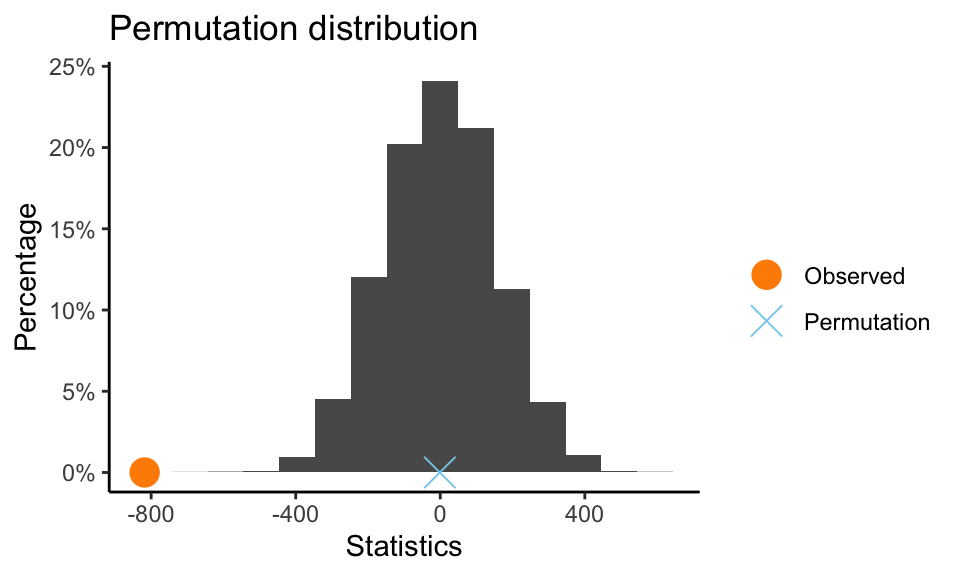

install.packages("dplyr") # note the quotation marks1 Drawing Statistical Conclusions
2 Introduction
To use a package within R, it must be installed (one time), and loaded (each session). The package can be installed using the following command:
Once this is installed, it can be loaded by running the command:
library(dplyr)This needs to be done once per session.
The dplyr package will allow us to easily manipulate data. We will also use the ggformula package for data visualization:
install.packages("ggformula") # note the quotation markslibrary(ggformula)In addition the data files for the Sleuth case studies can be accessed by installing the Sleuth3 package.
install.packages("Sleuth3") # note the quotation markslibrary(Sleuth3)We also set some options to improve legibility of graphs and output.
options(digits=3) # display three significant digits by defaultThe specific goal of this document is to demonstrate how to calculate the quantities described in Chapter 1: Drawing Statistical Conclusions using R.
3 Motivation and Creativity
For Case Study 1: Motivation and Creativity, the following questions are posed: Do grading systems promote creativity in students? Do ranking systems and incentive awards increase productivity among employees? Do rewards and praise stimulate children to learn?
The data for Case Study 1 was collected by psychologist Teresa Amabile in an experiment concerning the effects of intrinsic and extrinsic motivation on creativity (page 2 of the Sleuth).
3.1 Statistical summary and graphical display
We begin by reading the data and summarizing the variables.
data(case0101)
summary(case0101) Score Treatment
Min. : 5.0 Extrinsic:23
1st Qu.:14.9 Intrinsic:24
Median :18.7
Mean :17.9
3rd Qu.:21.2
Max. :29.7 A total of 47 subjects with considerable experience in creative writing were randomly assigned to one of two treatment groups: 23 were placed into the “extrinsic” treatment group and 24 were placed into the “intrinsic” treatment group, as summarized in Display 1.1 (Sleuth, page 2)
To calculate summary statistics for each group we can use the tools in the dplyr package:
case0101 %>%
group_by(Treatment) %>%
summarize(min = min(Score), Q1 = quantile(Score, probs = .25),
median = median(Score), Q3 = quantile(Score, probs = .75),
max = max(Score), mean = mean(Score), sd = sd(Score))# A tibble: 2 × 8
Treatment min Q1 median Q3 max mean sd
<fct> <dbl> <dbl> <dbl> <dbl> <dbl> <dbl> <dbl>
1 Extrinsic 5 12.2 17.2 19.0 24 15.7 5.25
2 Intrinsic 12 17.4 20.4 22.3 29.7 19.9 4.44Alternatively, you can use tapply (which may be familiar from a pervious class):
tapply(case0101$Score, case0101$Treatment, summary) # 5-number summary + mean$Extrinsic
Min. 1st Qu. Median Mean 3rd Qu. Max.
5.0 12.2 17.2 15.7 18.9 24.0
$Intrinsic
Min. 1st Qu. Median Mean 3rd Qu. Max.
12.0 17.4 20.4 19.9 22.3 29.7 tapply(case0101$Score, case0101$Treatment, sd) # std. deviationExtrinsic Intrinsic
5.25 4.44 gf_histogram( ~Score | Treatment, data = case0101, binwidth = 5)
To create stem-and-leaf plots for each level of a categorical variable, first load the CarletonStats package
library(CarletonStats)
stemPlot(Score ~ Treatment, data = case0101)
***Stem and Leaf plot for Score ***
Grouped by levels of Treatment
Extrinsic
:
The decimal point is 1 digit(s) to the right of the |
0 | 556
1 | 1222
1 | 55777789999
2 | 01124
Intrinsic
:
The decimal point is 1 digit(s) to the right of the |
1 | 2234
1 | 778899
2 | 001112223344
2 | 7
3 | 0The extrinsic group (\(n=23\)) has an average creativity score that is 4.1 points less than the intrinsic group (\(n=24\)). The extrinsic group has relatively larger spread than the intrinsic group (\(\text{sd}=5.25\) for extrinsic group and \(\text{sd}=4.44\) for intrinsic group). Both distributions are approximately normally distributed.
3.2 Inferential procedures (two-sample t-test)
t.test(Score ~ Treatment, alternative = "two.sided", data = case0101)
Welch Two Sample t-test
data: Score by Treatment
t = -3, df = 43, p-value = 0.006
alternative hypothesis: true difference in means between group Extrinsic and group Intrinsic is not equal to 0
95 percent confidence interval:
-7.01 -1.28
sample estimates:
mean in group Extrinsic mean in group Intrinsic
15.7 19.9 The two-sample t-test shows strong evidence that a subject would receive a lower creativity score for a poem written after the extrinsic motivation questionnaire than for one written after the intrinsic motivation questionnaire. The two-sided p-value is 0.006, which is small enough to reject the null hypothesis.
Thus, we can conclude that there is a difference between the population mean in the extrinsic group and the population mean in the intrinsic group; the estimated difference between these two scores is 4.1 points on the 0-40 point scale. A 95% confidence interval for the decrease in score due to having extrinsic motivation rather than intrinsic motivation is between \(-1.28\) and \(-7.01\) points (Sleuth, page 3).
In the creativity study, the question of whether there is a treatment effect becomes a question of whether the parameter has a nonzero value. The value of the test statistic for the creativity scores is 4.14. (Sleuth, page 11).
summary(lm(Score ~ Treatment, data = case0101))
Call:
lm(formula = Score ~ Treatment, data = case0101)
Residuals:
Min 1Q Median 3Q Max
-10.74 -2.98 1.06 2.96 9.82
Coefficients:
Estimate Std. Error t value Pr(>|t|)
(Intercept) 15.74 1.01 15.55 <2e-16 ***
TreatmentIntrinsic 4.14 1.42 2.93 0.0054 **
---
Signif. codes: 0 '***' 0.001 '**' 0.01 '*' 0.05 '.' 0.1 ' ' 1
Residual standard error: 4.85 on 45 degrees of freedom
Multiple R-squared: 0.16, Adjusted R-squared: 0.141
F-statistic: 8.56 on 1 and 45 DF, p-value: 0.005373.3 Permutation test
# permTest is in the CarletonStats package
permTest(Score ~ Treatment, data = case0101, alternative = "two.sided", B = 1000)
** Permutation test **
Permutation test with alternative: two.sided
Observed statistic
Extrinsic : 15.7 Intrinsic : 19.9
Observed difference: -4.14
Mean of permutation distribution: 0.00461
Standard error of permutation distribution: 1.52
P-value: 0.005
*-------------*
As described in the Sleuth on page 12, if the group assignment changes, we will get different results. First, the test statistics will be just as likely to be negative as positive. Second, the majority of values fall in the range from \(-3.0\) to \(+3.0\). Third, only few of the 1,000 randomization produced test statistics as large as 4.14. This last point indicates that 4.14 is a value corresponding to an unusually uneven randomization outcome, if the null hypothesis is correct.
4 Gender Discrimination
For Case Study 2: Gender Discrimination the following questions are posed: Did a bank discriminatorily pay higher starting salaries to men than to women? Display 1.3 (page 4 of the Sleuth) displays the beginning salaries for male and female skilled entry level clerical employees hired between 1969 and 1977
summary(case0102) # Display 1.3 Sleuth p4 Salary Sex
Min. :3900 Female:61
1st Qu.:4980 Male :32
Median :5400
Mean :5420
3rd Qu.:6000
Max. :8100 case0102 %>%
group_by(Sex) %>%
summarize(min = min(Salary), Q1 = quantile(Salary, probs = .25),
median = median(Salary), Q3 = quantile(Salary, probs = .75),
max = max(Salary), mean = mean(Salary), sd = sd(Salary))# A tibble: 2 × 8
Sex min Q1 median Q3 max mean sd
<fct> <int> <dbl> <dbl> <dbl> <int> <dbl> <dbl>
1 Female 3900 4800 5220 5400 6300 5139. 540.
2 Male 4620 5400 6000 6075 8100 5957. 691.gf_boxplot(Salary ~ Sex, data = case0102) # display 1.12
gf_histogram(~ Salary | Sex, data = case0102, binwidth = 400) # display 1.4
gf_density(~Salary, fill = ~Sex, data = case0102)
The 0 men have an average starting salary that is $818 more than the 61 women ($5957 vs $5139). Both distributions have similar spread (sd=$539.87 for women and sd=$690.73 for men) and distributions that are approximately normally distributed (see density plot). The key difference between the groups is the shift (as indicated by the parallel boxplots).
4.1 Inferential procedures (two-sample t-test)
The t-test on page 4 of Sleuth can be replicated using the following commands (note that the equal-variance t-test is specified by var.equal=TRUE which is not the default).
t.test(Salary ~ Sex, var.equal = TRUE, data = case0102, alternative = "less")
Two Sample t-test
data: Salary by Sex
t = -6, df = 91, p-value = 5e-09
alternative hypothesis: true difference in means between group Female and group Male is less than 0
95 percent confidence interval:
-Inf -602
sample estimates:
mean in group Female mean in group Male
5139 5957 4.2 Permutation test
We undertake a permutation test to assess whether the differences in the center of these samples that we are observing are due to chance, if the distributions are actually equivalent back in the populations of male and female possible clerical hires. We start by calculating our test statistic (the difference in means) for the observed data, then simulate from the null distribution (where the labels can be interchanged) and calculate our p-value.
permTest(Salary ~ Sex, data = case0102, alternative = "less")
** Permutation test **
Permutation test with alternative: less
Observed statistic
Female : 5139 Male : 5957
Observed difference: -818
Mean of permutation distribution: -1.15
Standard error of permutation distribution: 156
P-value: 1e-04
*-------------*
Through the permutation test, we observe that the mean starting salary for males is significantly larger than the mean starting salary for females, as we never see a permuted difference in means close to our observed value. Therefore, we reject the null hypothesis (p < 0.001) and conclude that the salaries of the men are higher than that of the women back in the population